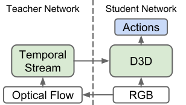

|  | D3D: Distilled 3D Networks for Video Action Recognition
Jonathan C. Stroud, David A. Ross, Chen Sun, Jia Deng, and Rahul Sukthankar
|
ABSTRACT: State-of-the-art methods for video action recognition commonly use an ensemble of two networks: the spatial stream, which takes RGB frames as input, and the temporal stream, which takes optical flow as input. In recent work, both of these streams consist of 3D Convolutional Neural Networks, which apply spatiotemporal filters to the video clip before performing classification. Conceptually, the temporal filters should allow the spatial stream to learn motion representations, making the temporal stream redundant. However, we still see significant benefits in action recognition performance by including an entirely separate temporal stream, indicating that the spatial stream is "missing" some of the signal captured by the temporal stream. In this work, we first investigate whether motion representations are indeed missing in the spatial stream of 3D CNNs. Second, we demonstrate that these motion representations can be improved by distillation, by tuning the spatial stream to predict the outputs of the temporal stream, effectively combining both models into a single stream. Finally, we show that our Distilled 3D Network (D3D) achieves performance on par with two-stream approaches, using only a single model and with no need to compute optical flow.
Pre-trained checkpoints and inference code for D3D will be made available soon.
For our experiments, we use subsets of Kinetics-400 and Kinetics-600 that were available publicly in October 2018. We provide lists of the videos used here. Please refer to the paper for more details.